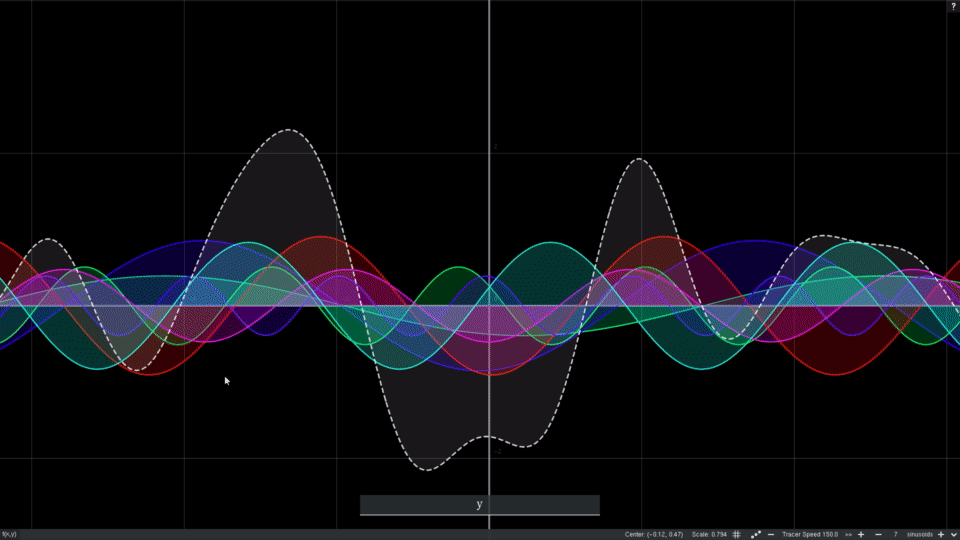
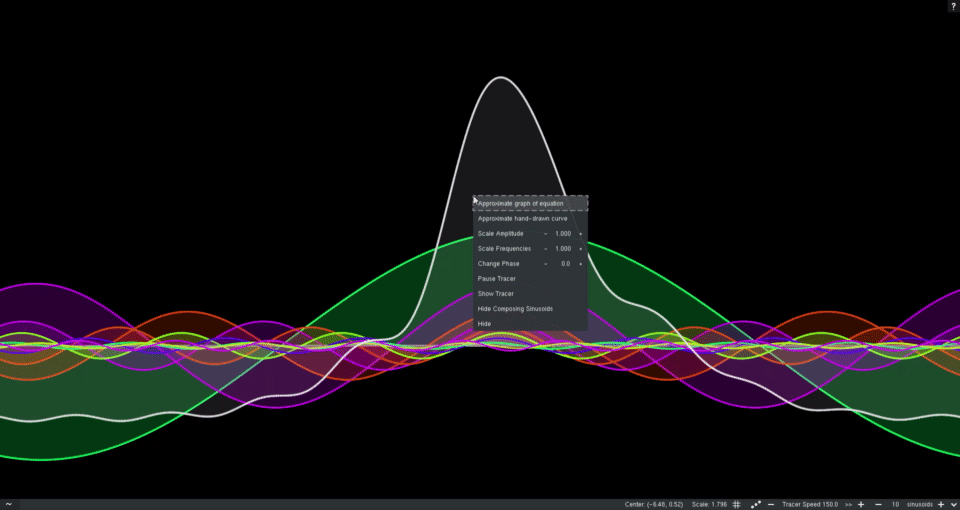
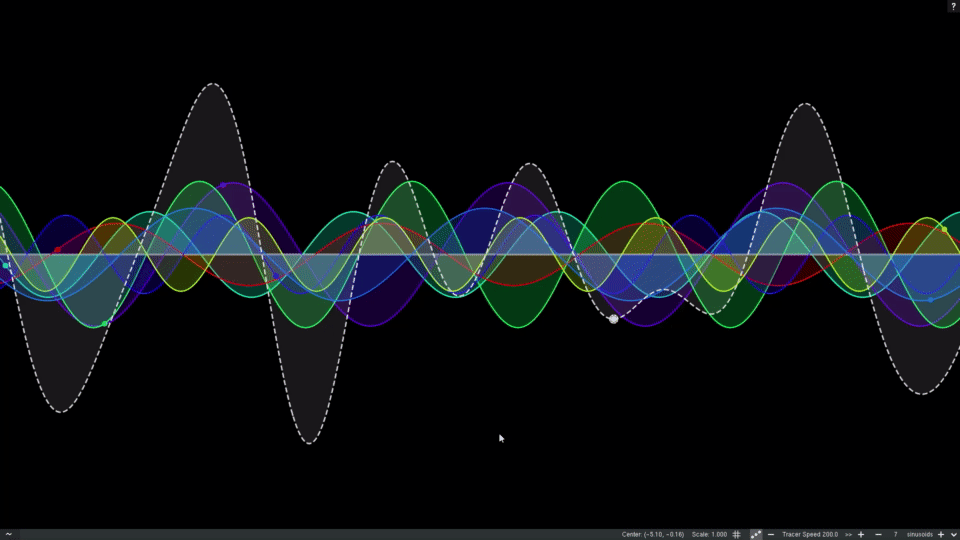

Sines have never been this pretty! Add, modify or remove any number of Sines and Cosines1. Color and adjust them however you like! Approximate any graph with sines! Plot the graph of any equation2 and the sinusoids will try their best to approximate it with the summation.  Draw your own curves! Make hand-drawn adjustments to the summation. Shape the resulting curve however you wish.3  Trace those curvy waves! Enable tracers for a pleasing animation of circles tracing the sinusoids. 